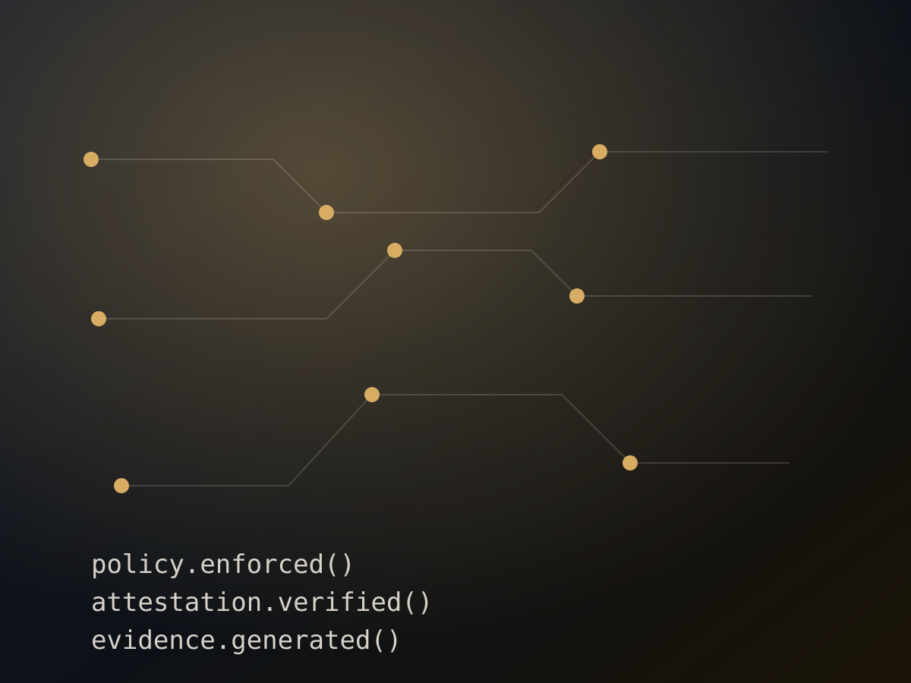

Verifiable Execution
Turning system behavior into evidence that can be independently checked instead of merely trusted.
Technology
I work across product strategy, platform architecture, API ecosystems, AI governance, cloud-native platforms, and verifiable execution. My current venture, Veritas, helps companies move from “trust us” to cryptographic proof that sensitive workloads were handled correctly.

Operating principle
My technology work focuses on the gap between what organizations claim, what systems actually do, and what customers or auditors can independently verify.
Current venture
Veritas is a platform for verifiable execution in AI and cloud workloads. It helps organizations move from trust based on claims, logs, and post-hoc audits toward cryptographic proof that customers and auditors can independently verify.
The goal is simple: when a sensitive workload runs, the system should be able to prove what ran, under what policy, in what environment, with what approval, and with what evidence.
Focus areas
Turning system behavior into evidence that can be independently checked instead of merely trusted.
Designing controls that operate during execution, not only after the fact through reviews or dashboards.
Connecting technical architecture, product decisions, customer trust, and go-to-market outcomes.
Exploring hardware-backed execution environments, attestation, and evidence generation.
Experience base
My technology perspective comes from hands-on experience across technical product management, API product ownership, platform strategy, developer experience, cloud-native architecture, and cross-functional delivery.
That background shapes how I think about Veritas: not as abstract infrastructure, but as a trust layer that needs to work for product teams, platform teams, customers, auditors, and business stakeholders.
View professional experience →Transformation & modernization
Alongside founder-led product work, I support conversations around platform modernization, API strategy, AI-first platform direction, operating model clarity, and transformation planning. The focus is not just technology selection — it is helping leaders define outcomes, reduce ambiguity, and connect platform investments to measurable value.
This work fits best where executives and platform leaders need translation across product, architecture, engineering, governance, and business stakeholders.
Read selected writing →“Observability explains what happened. Verifiability proves it happened correctly.”
Work together
Reach out for founder conversations, advisory work, speaking, or collaboration.
Contact Me